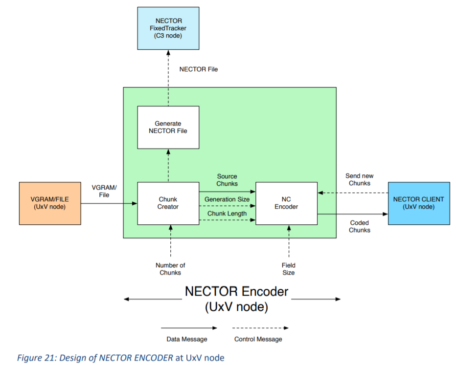

NECTOR Encoder
Responsible for creating chunks and NC encoding at chunk-level etc.

Three sub-functional blocks for NECTOR Encoder
Chunk Creator
Segment VGRAM/file into chunks. Usually the number of chunks is 32. Not to high to avoid NC complexity.
Bu the chunk length is depended on ABR (average bit rate) for video coding, videogram duration